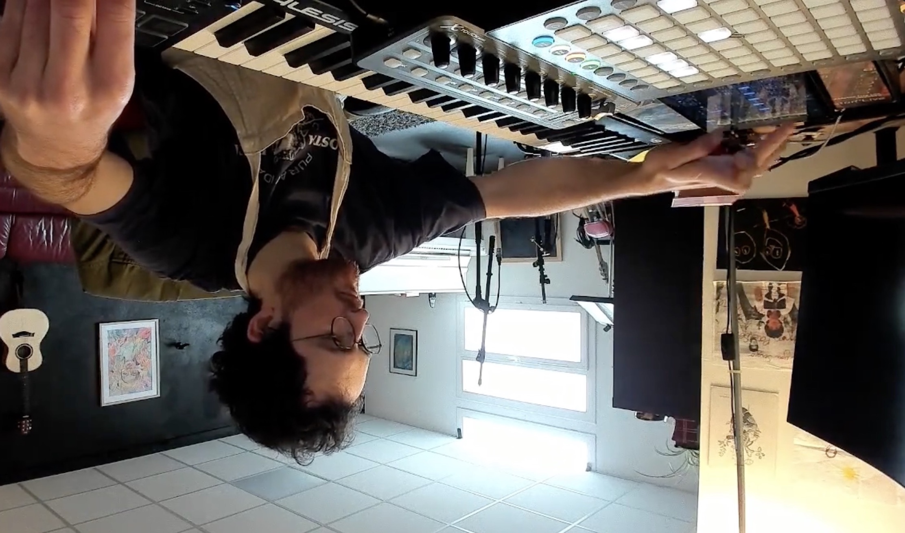
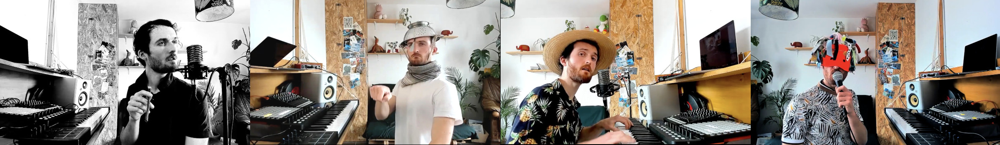

Du live, de l’improvisation et de la prise de risque, pour toucher le public en plein dans les tripes. De l’humain, augmenté avec des machines mais garanti AOP 100% pur hominidé.
Ugro utilise le live looping pour additionner et soustraire des motifs musicaux et composer sur le vif en fonction des envies. Sur le vif, ça veut dire que tout le monde peut y ajouter son grain de sel si l’envie y est. Le chef assure un plat structuré et gourmand, mais il est ouvert aux ingrédients secrets de ses clients.
Ce projet est garanti fait-maison 100% improvisation sans morceaux préparés ou pré-enregistrés. Il est non-calibré et peut donc comporter quelques fausses notes, une ou deux boucles un peu bancales, et un soupçon de jurons. Un régal.